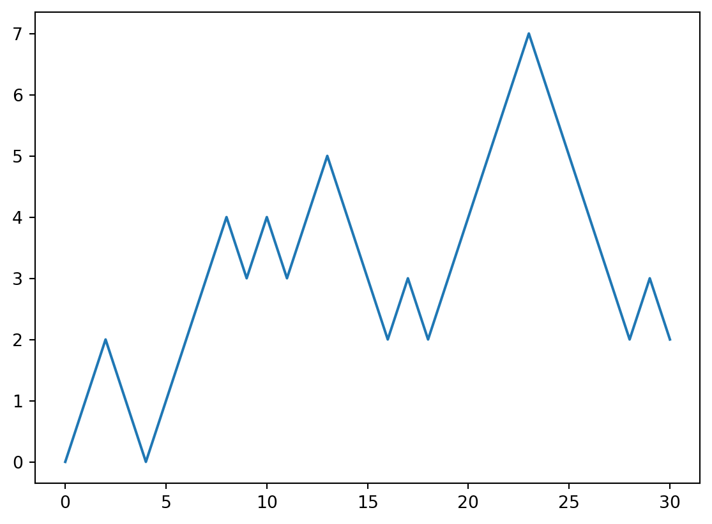
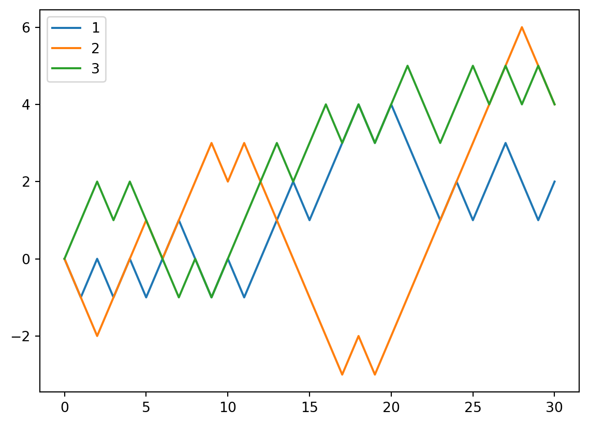

import numpy as np3 Package: numpy
The main reference for this chapter is [1].
3.1 Basics
The core data structure for numpy is numpy.ndarray. It is called NumPy Nd array. In most cases we will use its alias array for simplicity. You may treat it as a generalized version of list. However it can do so much more than the built-in list.
To use numpy, we just import it. In most cases you would like to use the alias np.
3.1.1 Understanding ndarray
The simplest way to look at an ndarray is to think it as lists of list. Here are some examples.
- This is an example of a 1d array. Note that it can be treated as a list. You may get access to its entries by 1 index, e.g.
a[0]. This means that: we have a list, and we want to get the0th element in the list.
a = np.array([1, 2])
aarray([1, 2])- This is an example of a 2d array. Note that it can be treated as a list of lists. You may get access to its entries by 2 indexes, e.g.
b[0, 0]. This means that: we have a list of lists. We first get the0th element (which is a list), and then get the0th element from this0th list (which is a number).
b = np.array([[1, 2], [3,4]])
barray([[1, 2],
[3, 4]])- This is an example of a 3d array. Note that it can be treated as a list of lists of lists. You may get access to its entries by 3 indexes, e.g.
c[0, 0, 0]. This means that: we have a list of lists of lists. We first get the0th element (which is a list of lists), and then get the0th element (which is a list) from this0th list of lists, and then get the0th element (which is a number) from the previous list.
c = np.array([[[1, 2], [3,4]], [[1, 2], [3,4]]])
carray([[[1, 2],
[3, 4]],
[[1, 2],
[3, 4]]])3.1.1.1 The dimension of ndarray
There is a very confusing terminology for ndarray: dimension. The actual word using in documents is actually axes. It refers to the number of coordinates required to describe the location.
In the previous example, a is a 1d array since you only need 1 index to get entries, b is a 2d array since you need 2 indexes to get entries, and c is a 3d array since you need 3 indexes to get entries.
We could use .ndim to check the dimension of a ndarray.
d = np.array([[1, 2, 3], [4, 5, 6]])
d.ndim2
Comparing to Linear algebras
The dimension of an ndarray and the dimenion of a vector in Linear algebras are totally different. In this example, as a ndarray, a=np.array([1, 2]) is a 1d ndarray, of length 2. As a vector, it is a 2d vector.
To describe the length of each axes, we could use .shape. It will tells us the length of each axis. In other words, it tells us the maximal index of each axis.
Example 3.1
d = np.array([[1, 2, 3], [4, 5, 6]])
d.shape(2, 3)The shape of d is (2, 3), which means that the length of axis 0 is 2 and the length of axis 1 is 3.
- Axis 0 is the vertical axis, and its index is corresponding to rows. The length of axis 0 is actually the number of rows.
- Axis 1 is the horizental axis, and its index is corresponding to columns. The length of axis 1 is actually the number of columns.
So a 2d array can be treated as a matrix, and the shape being (2, 3) means that the matrix has 2 rows and 3 columns.
Caution
.ndim and .shape are not methods. There is no () behind.
3.1.1.2 Moving along axis
A lot of numpy methods has an argument axis=, which let you to specify performing the action along which axis. You may understand this “along axis” in the following way. axis=i means that when we perform the action, we keep all other indexes the same, only changing the index on axis i.
For example, b.sum(axis=0) means that we want to add all entries along axis 0. So we start from a certain entry, keeping all other index the same when changing index on axis 0 only, and add all these entries together. Since axis 0 is corresponding to rows index, only changing row index means we are moving vertically. So if b is a 2d array, b.sum(axis=0) means we are adding all column together.
We will do more examples later this section.
3.1.2 Create ndarrays
There are many ways to create ndarrays. We list some basic ways below.
Converting from a Python
list
You may apply np.array() to a list to convert it into a ndarray.
- A list of numbers will create a 1d
ndarray. - A list of lists will create a 2d
ndarray. - Further nested lists will create a higher-dimensional
ndarray.
All arrays in the previous sections are created in this way.
Intrinsic
numpy array creation functions
Here is an incomplete list of such functions.
np.ones()andnp.zeros()- Both of them will create
ndarrayswith the specified shape.
- Both of them will create
np.eye()andnp.diag()- Both will create 2d array. So they can also be treated as creating matrices.
np.arange(start, stop, step)- It will only create 1d array, which start from
starttostopwith the step sizestep. startis by default0andstepis by default1.- In most cases the
stopis NOT included, which is similar to Python list. - The syntax is very similar to
range(). The main difference between them is the object type of the output.
- It will only create 1d array, which start from
np.linspace(start, stop, num)- It will only create 1d array, which starts from
start, stops atstopwith totallynumof points in the array, each of which are equally spread. startandstopare always INCLUDED in the array.
- It will only create 1d array, which starts from
np.random.rand()and many other functions innp.randompackage.
These functions are straightforward. You may go to the official documents for more details. For example this is the page for np.arange(). You may find other functions on the left navigation bar, or you may use the search function to locate them.
Reading from files
numpy provides several functions to read and write files. We discuss the most commonly used one: np.genfromtxt().
np.genfromtxt() is used to load data from a text file, with missing values handled as specified. The idea of this function is to first read the file as a string and then parse the structure of the string, automatically.
There are many arguments. Here are a few commonly used. For more details please read the official tutorial.
dtype: Data type of the resulting array. IfNone, the dtypes will be determined by the contents of each column, individually.delimiter: The string used to separate values. By default, any consecutive whitespaces act as delimiter.usecols: Which columns to read, with 0 being the first.encoding: This is used to decode the inputfile. The default setting forencodingisbytes. If it is set toNonethe system default is used. Please pay attention to the differences between these two.
Note that when choosing dtype, if the type is NOT a single type, the output will be a 1d array with each entry being a tuple. If it is a single type, the output will be a 2d array. Please see the following example.
import numpy as np
url = 'https://archive.ics.uci.edu/ml/machine-learning-databases/iris/iris.data'
iris_1d = np.genfromtxt(url, delimiter=',', dtype=None, encoding=None)
iris_2d = np.genfromtxt(url, delimiter=',', dtype='float', encoding=None)
iris_2d_str = np.genfromtxt(url, delimiter=',', dtype='str', encoding=None)
iris_1d[:10]array([(5.1, 3.5, 1.4, 0.2, 'Iris-setosa'),
(4.9, 3. , 1.4, 0.2, 'Iris-setosa'),
(4.7, 3.2, 1.3, 0.2, 'Iris-setosa'),
(4.6, 3.1, 1.5, 0.2, 'Iris-setosa'),
(5. , 3.6, 1.4, 0.2, 'Iris-setosa'),
(5.4, 3.9, 1.7, 0.4, 'Iris-setosa'),
(4.6, 3.4, 1.4, 0.3, 'Iris-setosa'),
(5. , 3.4, 1.5, 0.2, 'Iris-setosa'),
(4.4, 2.9, 1.4, 0.2, 'Iris-setosa'),
(4.9, 3.1, 1.5, 0.1, 'Iris-setosa')],
dtype=[('f0', '<f8'), ('f1', '<f8'), ('f2', '<f8'), ('f3', '<f8'), ('f4', '<U15')])iris_2d[:10]array([[5.1, 3.5, 1.4, 0.2, nan],
[4.9, 3. , 1.4, 0.2, nan],
[4.7, 3.2, 1.3, 0.2, nan],
[4.6, 3.1, 1.5, 0.2, nan],
[5. , 3.6, 1.4, 0.2, nan],
[5.4, 3.9, 1.7, 0.4, nan],
[4.6, 3.4, 1.4, 0.3, nan],
[5. , 3.4, 1.5, 0.2, nan],
[4.4, 2.9, 1.4, 0.2, nan],
[4.9, 3.1, 1.5, 0.1, nan]])iris_2d_str[:10]array([['5.1', '3.5', '1.4', '0.2', 'Iris-setosa'],
['4.9', '3.0', '1.4', '0.2', 'Iris-setosa'],
['4.7', '3.2', '1.3', '0.2', 'Iris-setosa'],
['4.6', '3.1', '1.5', '0.2', 'Iris-setosa'],
['5.0', '3.6', '1.4', '0.2', 'Iris-setosa'],
['5.4', '3.9', '1.7', '0.4', 'Iris-setosa'],
['4.6', '3.4', '1.4', '0.3', 'Iris-setosa'],
['5.0', '3.4', '1.5', '0.2', 'Iris-setosa'],
['4.4', '2.9', '1.4', '0.2', 'Iris-setosa'],
['4.9', '3.1', '1.5', '0.1', 'Iris-setosa']], dtype='<U15')We only show the first 10 rows to save some display room.
You may also download the datafile from the url provided in the code. The file can be opened with any editor. It is displayed below for reference.
b'5.1,3.5,1.4,0.2,Iris-setosa\n4.9,3.0,1.4,0.2,Iris-setosa\n4.7,3.2,1.3,0.2,Iris-setosa\n4.6,3.1,1.5,0.2,Iris-setosa\n5.0,3.6,1.4,0.2,Iris-setosa\n5.4,3.9,1.7,0.4,Iris-setosa\n4.6,3.4,1.4,0.3,Iris-setosa\n5.0,3.4,1.5,0.2,Iris-setosa\n4.4,2.9,1.4,0.2,Iris-setosa\n4.9,3.1,1.5,0.1,Iris-setosa\n5.4,3.7,1.5,0.2,Iris-setosa\n4.8,3.4,1.6,0.2,Iris-setosa\n4.8,3.0,1.4,0.1,Iris-setosa\n4.3,3.0,1.1,0.1,Iris-setosa\n5.8,4.0,1.2,0.2,Iris-setosa\n5.7,4.4,1.5,0.4,Iris-setosa\n5.4,3.9,1.3,0.4,Iris-setosa\n5.1,3.5,1.4,0.3,Iris-setosa\n5.7,3.8,1.7,0.3,Iris-setosa\n5.1,3.8,1.5,0.3,Iris-setosa\n5.4,3.4,1.7,0.2,Iris-setosa\n5.1,3.7,1.5,0.4,Iris-setosa\n4.6,3.6,1.0,0.2,Iris-setosa\n5.1,3.3,1.7,0.5,Iris-setosa\n4.8,3.4,1.9,0.2,Iris-setosa\n5.0,3.0,1.6,0.2,Iris-setosa\n5.0,3.4,1.6,0.4,Iris-setosa\n5.2,3.5,1.5,0.2,Iris-setosa\n5.2,3.4,1.4,0.2,Iris-setosa\n4.7,3.2,1.6,0.2,Iris-setosa\n4.8,3.1,1.6,0.2,Iris-setosa\n5.4,3.4,1.5,0.4,Iris-setosa\n5.2,4.1,1.5,0.1,Iris-setosa\n5.5,4.2,1.4,0.2,Iris-setosa\n4.9,3.1,1.5,0.1,Iris-setosa\n5.0,3.2,1.2,0.2,Iris-setosa\n5.5,3.5,1.3,0.2,Iris-setosa\n4.9,3.1,1.5,0.1,Iris-setosa\n4.4,3.0,1.3,0.2,Iris-setosa\n5.1,3.4,1.5,0.2,Iris-setosa\n5.0,3.5,1.3,0.3,Iris-setosa\n4.5,2.3,1.3,0.3,Iris-setosa\n4.4,3.2,1.3,0.2,Iris-setosa\n5.0,3.5,1.6,0.6,Iris-setosa\n5.1,3.8,1.9,0.4,Iris-setosa\n4.8,3.0,1.4,0.3,Iris-setosa\n5.1,3.8,1.6,0.2,Iris-setosa\n4.6,3.2,1.4,0.2,Iris-setosa\n5.3,3.7,1.5,0.2,Iris-setosa\n5.0,3.3,1.4,0.2,Iris-setosa\n7.0,3.2,4.7,1.4,Iris-versicolor\n6.4,3.2,4.5,1.5,Iris-versicolor\n6.9,3.1,4.9,1.5,Iris-versicolor\n5.5,2.3,4.0,1.3,Iris-versicolor\n6.5,2.8,4.6,1.5,Iris-versicolor\n5.7,2.8,4.5,1.3,Iris-versicolor\n6.3,3.3,4.7,1.6,Iris-versicolor\n4.9,2.4,3.3,1.0,Iris-versicolor\n6.6,2.9,4.6,1.3,Iris-versicolor\n5.2,2.7,3.9,1.4,Iris-versicolor\n5.0,2.0,3.5,1.0,Iris-versicolor\n5.9,3.0,4.2,1.5,Iris-versicolor\n6.0,2.2,4.0,1.0,Iris-versicolor\n6.1,2.9,4.7,1.4,Iris-versicolor\n5.6,2.9,3.6,1.3,Iris-versicolor\n6.7,3.1,4.4,1.4,Iris-versicolor\n5.6,3.0,4.5,1.5,Iris-versicolor\n5.8,2.7,4.1,1.0,Iris-versicolor\n6.2,2.2,4.5,1.5,Iris-versicolor\n5.6,2.5,3.9,1.1,Iris-versicolor\n5.9,3.2,4.8,1.8,Iris-versicolor\n6.1,2.8,4.0,1.3,Iris-versicolor\n6.3,2.5,4.9,1.5,Iris-versicolor\n6.1,2.8,4.7,1.2,Iris-versicolor\n6.4,2.9,4.3,1.3,Iris-versicolor\n6.6,3.0,4.4,1.4,Iris-versicolor\n6.8,2.8,4.8,1.4,Iris-versicolor\n6.7,3.0,5.0,1.7,Iris-versicolor\n6.0,2.9,4.5,1.5,Iris-versicolor\n5.7,2.6,3.5,1.0,Iris-versicolor\n5.5,2.4,3.8,1.1,Iris-versicolor\n5.5,2.4,3.7,1.0,Iris-versicolor\n5.8,2.7,3.9,1.2,Iris-versicolor\n6.0,2.7,5.1,1.6,Iris-versicolor\n5.4,3.0,4.5,1.5,Iris-versicolor\n6.0,3.4,4.5,1.6,Iris-versicolor\n6.7,3.1,4.7,1.5,Iris-versicolor\n6.3,2.3,4.4,1.3,Iris-versicolor\n5.6,3.0,4.1,1.3,Iris-versicolor\n5.5,2.5,4.0,1.3,Iris-versicolor\n5.5,2.6,4.4,1.2,Iris-versicolor\n6.1,3.0,4.6,1.4,Iris-versicolor\n5.8,2.6,4.0,1.2,Iris-versicolor\n5.0,2.3,3.3,1.0,Iris-versicolor\n5.6,2.7,4.2,1.3,Iris-versicolor\n5.7,3.0,4.2,1.2,Iris-versicolor\n5.7,2.9,4.2,1.3,Iris-versicolor\n6.2,2.9,4.3,1.3,Iris-versicolor\n5.1,2.5,3.0,1.1,Iris-versicolor\n5.7,2.8,4.1,1.3,Iris-versicolor\n6.3,3.3,6.0,2.5,Iris-virginica\n5.8,2.7,5.1,1.9,Iris-virginica\n7.1,3.0,5.9,2.1,Iris-virginica\n6.3,2.9,5.6,1.8,Iris-virginica\n6.5,3.0,5.8,2.2,Iris-virginica\n7.6,3.0,6.6,2.1,Iris-virginica\n4.9,2.5,4.5,1.7,Iris-virginica\n7.3,2.9,6.3,1.8,Iris-virginica\n6.7,2.5,5.8,1.8,Iris-virginica\n7.2,3.6,6.1,2.5,Iris-virginica\n6.5,3.2,5.1,2.0,Iris-virginica\n6.4,2.7,5.3,1.9,Iris-virginica\n6.8,3.0,5.5,2.1,Iris-virginica\n5.7,2.5,5.0,2.0,Iris-virginica\n5.8,2.8,5.1,2.4,Iris-virginica\n6.4,3.2,5.3,2.3,Iris-virginica\n6.5,3.0,5.5,1.8,Iris-virginica\n7.7,3.8,6.7,2.2,Iris-virginica\n7.7,2.6,6.9,2.3,Iris-virginica\n6.0,2.2,5.0,1.5,Iris-virginica\n6.9,3.2,5.7,2.3,Iris-virginica\n5.6,2.8,4.9,2.0,Iris-virginica\n7.7,2.8,6.7,2.0,Iris-virginica\n6.3,2.7,4.9,1.8,Iris-virginica\n6.7,3.3,5.7,2.1,Iris-virginica\n7.2,3.2,6.0,1.8,Iris-virginica\n6.2,2.8,4.8,1.8,Iris-virginica\n6.1,3.0,4.9,1.8,Iris-virginica\n6.4,2.8,5.6,2.1,Iris-virginica\n7.2,3.0,5.8,1.6,Iris-virginica\n7.4,2.8,6.1,1.9,Iris-virginica\n7.9,3.8,6.4,2.0,Iris-virginica\n6.4,2.8,5.6,2.2,Iris-virginica\n6.3,2.8,5.1,1.5,Iris-virginica\n6.1,2.6,5.6,1.4,Iris-virginica\n7.7,3.0,6.1,2.3,Iris-virginica\n6.3,3.4,5.6,2.4,Iris-virginica\n6.4,3.1,5.5,1.8,Iris-virginica\n6.0,3.0,4.8,1.8,Iris-virginica\n6.9,3.1,5.4,2.1,Iris-virginica\n6.7,3.1,5.6,2.4,Iris-virginica\n6.9,3.1,5.1,2.3,Iris-virginica\n5.8,2.7,5.1,1.9,Iris-virginica\n6.8,3.2,5.9,2.3,Iris-virginica\n6.7,3.3,5.7,2.5,Iris-virginica\n6.7,3.0,5.2,2.3,Iris-virginica\n6.3,2.5,5.0,1.9,Iris-virginica\n6.5,3.0,5.2,2.0,Iris-virginica\n6.2,3.4,5.4,2.3,Iris-virginica\n5.9,3.0,5.1,1.8,Iris-virginica\n\n'The file can be understood as follows. \n separates rows and , separates columns. Each row contains five columns, where the last one is definitely a string, and the first four are numeric. Therefore the whole dataset is a mixed type dataset.
- In the first command,
dtype=None. Since any types are accepted, it returns an 1d array with each row being a tuple. - In the second command,
dtype='float'. Then onlyfloatdata is accepted. Then we have a 2d array with the last column (string data that cannot be tranlated into a float) beingnp.nan. - In the third command,
dtype='string'. Then all data are tranlated into strings, and we get a 2d array.
Changing the shape of other
ndarrays
There are multiple ways to manipulate the shapes of ndarrays. We will only mention some commonly used ones in this section.
np.concatenate()
np.concatenate() is used to join a sequence of ndarrays along an existing axis. Therefore the major input arugments including:
- A tuple which represents the sequence of
ndarrays. - The axis for the
ndarraysto be concatenated. The default isaxis=0.
The setting for axis is the same as in Section 3.1.1.2. That is, axis=i along the axis i means that all we collect all the entries with the same other indexes and different ith index.
A quick example is about a 2d ndarrays. When talking about axis=0, we are looking at entries that have the same 1st index and different 0th index. This refers to all the entries in one column. So if we want to do something vertically, we need to set axis=0.
Similarly, axis=1 means that we are looking at the entries wich the same 0th index and different 1st index. These are entries in the same row. So axis=1 menas horizontally. Please see the following example.
Example 3.2 (Axis) Given A = np.array([[1,2],[3,4]]) and B = np.array([[5,6],[7,8]]), please use np.concatenate to concatencate these two matrices to get a new matrix, in the order:
Aleft,Bright
np.concatenate((A, B), axis=1)array([[1, 2, 5, 6],
[3, 4, 7, 8]])Aright,Bleft
np.concatenate((B, A), axis=1)array([[5, 6, 1, 2],
[7, 8, 3, 4]])Aup,Bdown
np.concatenate((A, B), axis=0)array([[1, 2],
[3, 4],
[5, 6],
[7, 8]])Adown,Bup
np.concatenate((B, A), axis=0)array([[5, 6],
[7, 8],
[1, 2],
[3, 4]])- Reshape
np.reshape() functions and .reshape() methods are equivalent. They are used to change the shape of the original ndarray. Please see the following example.
A = np.array([[1, 2, 3], [4, 5, 6]])
A.reshape((6, 1))array([[1],
[2],
[3],
[4],
[5],
[6]])- Transpose
There are three ways to perform transpose.
np.transpose()function.transpose()method.Tattribute Please see the following example.
A = np.array([[1, 2, 3], [4, 5, 6]])
A.Tarray([[1, 4],
[2, 5],
[3, 6]])Note that in the third method, .T is NOT a function that there are no () at the end.
Pay attention to the format of inputs
Please be very careful about the format of the input. For example, when you want to specify the dimension of the array, using np.zeros, you need to input a tuple. On the other hand, when using np.random.rand, you just directly input the dimensions one by one.
import numpy as np
np.zeros((3, 2))
np.random.rand(3, 2)In this case, the official documents are always your friend.
3.1.3 Mathematical and Statistical Methods
Many functions performs element-wise operations on data in ndarrays, and supports array broadcasting, type casting, and several other standard features. This type of functions is called a universal function (or ufunc for short).
With ufuncs, using ndarrays enables you to express many kinds of data processing tasks as concise array expressions that might otherwise require writing loops. This practice of replacing explicit loops with array expressions is commonly referred to as vectorization.
Please see the following example.
Example 3.3
import numpy as np
x = np.linspace(0, 1, 101)
y = np.sin(x)
z = y**2 + 2*y-3This example defines two functions \(y=\sin(x)\) and \(z=y^2+2y-3\). The syntax is very similar to the math language.
Caution
Please pay attention to the difference between numpy functions and ndarray methods. numpy functions are functions defined in the numpy package that you use it by applying it to the arguments. ndarray methods are function defined specific for one ndarray, and it is used by calling it after the ndarray with . symbol. In the official documents, a numpy function looks like numpy.XXX() while a ndarray method looks like numpy.ndarray.XXX(). Please see the following example.
Here is an incomplete list of ufuncs. Some functions come with brief introductions. For more details please read the official documents.
numpyfunctions+,-,*,/,**, etc..>,<,>=,<=,==,!=, etc..np.sin(),np.exp(),np.sqrt(), etc..np.dot(): Matrix multiplication.np.unique(): Find out all unique values from the array.np.maximum()andnp.minimum(): These are used to find the maximum/minimum between twonp.array.np.argmax()andnp.argmin(): Return the indices of the maximum/minimum values. There are also.argmin()and.argmax()methods.np.sort(): Sort the array. There is also a.sort()method.
ndarraymethods.mean(),.sum(),.std(),.var(): Array methods that are used to compute corresponding properties of the array..cumsum(): Return the cumulative sum of the elements along a given axis..max()and.min(): This is used to find the maximal/minimal entry of onenp.array.
.argmax()and.argmin(): Return the indices of the maximum/minimum values. There are alsonp.argmax()andnp.argmin()functions..sort(): Sort the array. There is also anp.sort()function.
Tip
Don’t forget that most functions and methods have axis arguments to specify which axis you want to move along with.
3.1.3.1 Broadcasting
Although most numpy functions and ndarray methods are computing entry-wise, when we perform binary operations, the size of the two arrays don’t have to be the same. If they are not the same, the Broadcasting Rule applies, and some entries will be filled automatically by repeating themselves.
The Broadcasting Rule
Two arrays are compatible for broadcasting if for each dimension the axis lengths match or if either of the lengths is 1. Broadcasting is then performed over the missing or length 1 dimensions.
Please see the following examples.
import numpy as np
a = np.array([1, 2])
a + 1array([2, 3])b = np.array([[3, 4], [5, 6]])
a + barray([[4, 6],
[6, 8]])c = np.array([[1], [2]])
b + carray([[4, 5],
[7, 8]])3.2 Indexing
3.2.1 Basic indexing
Basic indexing is very similar to indexing and slicing for list. Please see the following examples.
Example 3.4
import numpy as np
arr = np.arange(10)
arrarray([0, 1, 2, 3, 4, 5, 6, 7, 8, 9])arr[5]5arr[5:8]array([5, 6, 7])arr[5:8:2]array([5, 7])arr[8:5:-1]array([8, 7, 6])arr[::-1]array([9, 8, 7, 6, 5, 4, 3, 2, 1, 0])arr[5:8] = 12
arrarray([ 0, 1, 2, 3, 4, 12, 12, 12, 8, 9])To do slicing in higher dimensional case, you may directly work with it with multiindexes.
Example 3.5
import numpy as np
arr3d = np.arange(12).reshape(2, 2, 3)
arr3darray([[[ 0, 1, 2],
[ 3, 4, 5]],
[[ 6, 7, 8],
[ 9, 10, 11]]])arr3d[0, 1, 2]5arr3d[:, 0: 2, 1]array([[ 1, 4],
[ 7, 10]])arr3d[:, 0: 2, 1:2]array([[[ 1],
[ 4]],
[[ 7],
[10]]])
Nested indexes
In theory, since ndarrys can be treated as lists of list, it is possible to use nested index to get access to entries. For example, assuming a is a 2d ndarray, we might use a[0][0] to get access to a[0, 0]. This is a legal syntax.
However it is almost required NOT to do so. The main reason is due to the copy/view rules that will be described later. Nested indexes might cause many confusions and it is highly possible to casue unexpected errors.
3.2.2 Advanced Indexing
Advanced indexing is triggered when the selection object satisfies some conditions. The concrete definition is technical and abstract. You may (not entirely correctly) understand it as “everything other than basic indexing (concrete coordinates or slicing)”. Please read the official document for more details.
Here we mainly focus on some typical advaced indexing methods.
Caution
There are some very exotic examples that are very hard to tell whether they belong to basic indexing or advanced indexing. Our suggestion is to avoid this type of code, and try to code in the most straight forward way. You could come back to understand this problem later when you are more expericened, but it is more of a Programming Language problem, instead of a Data Science problem.
Fancy indexing
Fancy indexing is a term adopted by numpy to describe indexing using integer arrays.
The basic idea is to use a list of indexes to select entries. The general rule is relative complicated. Here we will only talk about 1d and 2d cases.
1d case
When dealing with a 1d ndarray, indexing by a list is straight forward. Please see the following example.
import numpy as np
arr = np.arange(16)
arr[[1, 3, 0, 2]]array([1, 3, 0, 2])
A trick example
Please consider the following two indexings.
arr[1:2]array([1])arr[[1]]array([1])From the first glance, the two outputs look the same. However they are from two different techniques.
- The
1:2inarr[1:2]is aslice. Therefore the first indexing is basic indexing. - The
[1]inarr[[1]]is alist. Therefore the second indexing is advanced indexing.
The main reason to distinguish these two indexings is about view and copy, which will be discussed in the next section.
2d case
When dealing with a 2d ndarray, there are multiple possibilities. In the following discussion we will use the following example.
A = np.arange(16).reshape((4, 4))
Aarray([[ 0, 1, 2, 3],
[ 4, 5, 6, 7],
[ 8, 9, 10, 11],
[12, 13, 14, 15]])
1. If only one
list is given
If only one list is given, this list is considered as the list of row indexes. The resulted ndarray is always 2d.
A[[3, 1]]array([[12, 13, 14, 15],
[ 4, 5, 6, 7]])
2. If two arguments are given, one is a
list, the other is :
If two arguments are given, one is a list, the other is :, this list refers to row indexes if it is in the first argument place, and refers to column indexes if it is in the second argument place. The resulted ndarray is always 2d.
A[[3, 1], :]array([[12, 13, 14, 15],
[ 4, 5, 6, 7]])A[:, [3, 1]]array([[ 3, 1],
[ 7, 5],
[11, 9],
[15, 13]])
3. If both two arguments are
lists of the same length
If both two arguments are lists of the same length, it is considered as the list of axis 0 coordinates and the list of axis 1 coordinates. In this case, the resulted ndarray is 1d.
A[[0, 1], [3, 1]]array([3, 5])In this example, the two lists together gives two entries.
- The coordinate of the first entry is
(0, 3)since they are the first entry of eachlist. The(0, 3)entry inAis3. - The coordinate of the second entry is
(1, 1)since they are the second entry of eachlist. The(1, 1)entry inAis5.
Then the result is array([3, 5]), as shown above.
4. If both two arguments are
lists, and one of the lists is of length 1
If both two arguments are lists, and one of the lists is of length 1, it is the same as the previous case, with the list of length 1 being broadcasted.
A[[0], [3, 1]]array([3, 1])In this example, after broadcasting, the result is the same as A[[0,0], [3,1]].
For higher dimensions, please read the documents to understand how it actually works.
Note that ndarray can also be used as indexes and it behaves very similar to list.
Boolean Indexing
ndarray can accept index in terms of ndarrays with boolean indexing.
Example 3.6
import numpy as np
a = np.arange(4)
b = np.array([True, True, False, True])
aarray([0, 1, 2, 3])barray([ True, True, False, True])a[b]array([0, 1, 3])We could combine this way with the logic computation to filter out the elements we want/don’t want.
Example 3.7 Please find the odd numbers in arr.
arr = np.arange(10)
odd = (arr %2 == 1)
arr[odd] array([1, 3, 5, 7, 9])3.2.3 Copies and views
The view of an ndarray is a way to get access to the array without copying internel data. When operating with a view, the original data as well as all other views of the original data will be modified simutanously.
Example 3.8
import numpy as np
arr = np.arange(10)
b = arr[5:8]
print('arr is {}'.format(arr))
print('b is {}'.format(b))arr is [0 1 2 3 4 5 6 7 8 9]
b is [5 6 7]b[0] = -1
print('arr is {}'.format(arr))
print('b is {}'.format(b))arr is [ 0 1 2 3 4 -1 6 7 8 9]
b is [-1 6 7]arr[6] = -2
print('arr is {}'.format(arr))
print('b is {}'.format(b))arr is [ 0 1 2 3 4 -1 -2 7 8 9]
b is [-1 -2 7]The default setting for copies and views is that, basic indexing will always make views, and advanced indexing (e.g. boolean indexing, fancy indexing, etc.) will make copies. For other operations, you need to check the documents to know how they work. For example, np.reshape() creates a view where possible, and np.flatten() always creates a copy.
The way to check whether something is a view or not is the attribute .base. If it is a view of another ndarray, you may see that ndarray in the attribute .base. If it is not a view, in other words, if it is a copy, the .base attribute is None.
Example 3.9
A = np.random.rand(3, 3)
Aarray([[0.56383989, 0.64727413, 0.91154088],
[0.66873588, 0.29338032, 0.22314897],
[0.0552867 , 0.57712631, 0.14543216]])A[1:2].basearray([[0.56383989, 0.64727413, 0.91154088],
[0.66873588, 0.29338032, 0.22314897],
[0.0552867 , 0.57712631, 0.14543216]])Basic indexing creates views. In this example, the base of A[1:2] is A, which means that A[1:2] is a view of A.
print(A[[1]].base)NoneAdvanced indexing creates copys. In this example, the base is None. So A[[1]] is NOT a view of anything.
You may use np.view() or np.copy() to make views or copies explicitly.
Example 3.10
arr = np.arange(10)
b = arr[5:8].copy()
print('arr is {}'.format(arr))
print('b is {}'.format(b))arr is [0 1 2 3 4 5 6 7 8 9]
b is [5 6 7]b[0] = -1
print('arr is {}'.format(arr))
print('b is {}'.format(b))arr is [0 1 2 3 4 5 6 7 8 9]
b is [-1 6 7]arr[6] = -2
print('arr is {}'.format(arr))
print('b is {}'.format(b))arr is [ 0 1 2 3 4 5 -2 7 8 9]
b is [-1 6 7]print('The base of b is {}'.format(b.base))The base of b is None3.3 More functions
We introduce a few more advanced functions here. All the following functions are somehow related to the indexes of entries.
np.where()
np.where() is a very powerful function. The basic usage is np.where(A satisfies condition). The output is an ndarray of indexes of entries of A that satisfies the condition.
- When the
ndarrayin question is 1d, the output is a 1dndarrayof indexes.
import numpy as np
a = np.random.randint(10, size=10)
aarray([3, 0, 8, 7, 7, 4, 7, 7, 4, 4])np.where(a%3 == 1)(array([3, 4, 5, 6, 7, 8, 9], dtype=int64),)Since the output is the ndarray of indexes, it is possible to directly use it to get those entries.
a[np.where(a%3 == 1)]array([7, 7, 4, 7, 7, 4, 4])Note that this is a fancy indexing, so the result is a copy.
- When the
ndarrayin question is 2d, the output is a tuple which consists of two 2dndarrayof indexes. The twondarraysare the arrays of theaxis 0indexes and theaxis 1indexes of the very entries.
b = np.random.randint(10, size=(3, 3))
barray([[6, 3, 9],
[5, 7, 0],
[3, 4, 4]])np.where(b%2 == 0)(array([0, 1, 2, 2], dtype=int64), array([0, 2, 1, 2], dtype=int64))Similar to the previous case, we may directly using fancy indexing to get an ndarray of the entries, and what we get is a copy.
b[np.where(b%2 == 0)]array([6, 0, 4, 4])np.where()has two more optional arguments.
np.where(arr satisfies condition, x, y)The output is an ndarray of the same shape as arr. For each entry, if it satisfies the condition, the entry is x. Otherwise it is y.
arr = np.arange(10)
np.where(arr<5, 0, 1)array([0, 0, 0, 0, 0, 1, 1, 1, 1, 1])numpy will go over all entries in arr, and check whether they are smaller than 5. If an entry is smaller than 5, it is set to 0. If an entry is not smaller than 5, it is set to 1.
This is a very convenient way to do some aggragation operations.
np.any() and np.all()
Both of them will check each entry of an ndarray satisfies certain conditions. np.any() will return True if any one entry satisfies the condition. np.all() will return True if all entries satisfy the condition.
Both of them also accept axis argument. In this case output will be an ndarray which gives results along the specific axis.
Please see the following examples.
a = np.array([[1,2],[2,4], [3,5]])
np.any(a%2==0)Truenp.any(a%2==0, axis=0)array([ True, True])np.any(a%2==0, axis=1)array([ True, True, False])np.all(a%2==0)Falsenp.all(a%2==0, axis=0)array([False, False])np.all(a%2==0, axis=1)array([False, True, False])np.argsort()
np.argsort() returns the indices that would sort an array. It is easy to think of that indexing using this output indices can resulted a sorted ndarray, which is a copy of the original one since this indexing is a fancy indexing.
import numpy as np
a = np.random.randint(100, size=10)
aarray([90, 56, 79, 93, 52, 29, 61, 46, 93, 51])a[np.argsort(a)]array([29, 46, 51, 52, 56, 61, 79, 90, 93, 93])3.3.1 Some examples
Example 3.11 Get the position where elements of a and b match.
a = np.array([1,2,3,2,3,4,3,4,5,6])
b = np.array([7,2,10,2,7,4,9,4,9,8])
np.where(a == b)(array([1, 3, 5, 7], dtype=int64),)Example 3.12
a = np.array([1,2,3,2,3,4,3,4,5,6])
b = np.array([7,2,10,2,7,4,9,4,9,8])
np.where(a == b, a*2, b+1)array([ 8, 4, 11, 4, 8, 8, 10, 8, 10, 9])Example 3.13 (Playing with axis) Please think through the example and understand what actually happens in each case.
import numpy as np
a = np.array([[[1,2],[3,4]],[[5,6],[7,8]]])
aarray([[[1, 2],
[3, 4]],
[[5, 6],
[7, 8]]])np.any(a==1, axis=0)array([[ True, False],
[False, False]])np.any(a==1, axis=1)array([[ True, False],
[False, False]])np.any(a==1, axis=2)array([[ True, False],
[False, False]])np.any(a==2, axis=0)array([[False, True],
[False, False]])np.any(a==2, axis=1)array([[False, True],
[False, False]])np.any(a==2, axis=2)array([[ True, False],
[False, False]])np.any(a==5, axis=0)array([[ True, False],
[False, False]])np.any(a==5, axis=1)array([[False, False],
[ True, False]])np.any(a==5, axis=2)array([[False, False],
[ True, False]])3.4 Projects Examples
3.4.1 Toss a coin
Tossing a coin can be modeled by picking a random number between 0 and 1. If the number is <0.5, we call it H (head). If the number is >=0.5, we call it T (tail).
Tip
import numpy as np
def tossacoin():
r = np.random.rand()
if r < 0.5:
result = 'H'
else:
result = 'T'
return resultIf we want to do it 10 times, we may use a for loop.
Tip
results = []
for i in range(10):
results.append(tossacoin())The above code can be written in terms of list comprehension.
Tip
results = [tossacoin() for _ in range(10)]Note that since the loop parameter i is actually not used in the loop body, we could replace it by _ to indicate that it is not used.
Now we would like to rewrite these code using np.where(). Consider all tossing actions simutanously. So we generate an ndarray of random numbers to model all tossing actions.
Tip
toss = np.random.rand(10)Then using np.where() to check each whether it is H or T.
Tip
results = np.where(toss<0.5, 'H', 'T')Since now results is an ndarray, we could directly use it to count the number of H.
Tip
(results=='H').sum()53.4.2 Random walks
Adam walks randomly along the axis. He starts from 0. Every step he has equal possibility to go left or right. Please simulate this process.
Use choices to record the choice of Adam at each step. We may generate a random array where 0 represents left and 1 represents right.
Use positions to record the position of Adam at each step. Using choices, the position is +1 if we see a 1 and the position is -1 if we see a 0. So the most elegent way to perform this is to
- Convert
choicesfrom{0, 1}to{-1, 1}. - To record the starting position, we attach
0to the beginning of the newchoices. - Apply
.cumsum()tochoicesto getpositions.
Tip
import numpy as np
step = 30
choices = np.random.randint(2, size=step)
choices = choices * 2 - 1
choices = np.concatenate(([0], choices))
positions = choices.cumsum()
import matplotlib.pyplot as plt
plt.plot(positions)
3.4.3 Many random walks
We mainly use numpy.ndarray to write the code in the previous example. The best part here is that it can be easily generalized to many random walks.
Still keep choices and positions in mind. Now we would like to deal with multiple people simutanously. Each row represents one person’s random walk. All the formulas stay the same. We only need to update the dimension setting in the previous code.
- Update
sizeinnp.random.randint. - Update
[0]tonp.zeros((N, 1))inconcatenate. - For
cumsumandconcatenate, addaxis=1to indicate that we perform the operations alongaxis 1. - We plot each row in the same figure.
plt.legendis used to show the label for each line.
Tip
import numpy as np
step = 30
N = 3
choices = np.random.randint(2, size=(N, step))
choices = choices * 2 - 1
choices = np.concatenate((np.zeros((N, 1)), choices), axis=1)
positions = choices.cumsum(axis=1)
import matplotlib.pyplot as plt
for row in positions:
plt.plot(row)
plt.legend([1, 2, 3])
3.4.4 Analyze positions
We play with the numpy array positions to get some information about the random walks of three generated in the previous example.
- The maximal position:
Tip
positions.max()6.0- The maximal position for each one:
Tip
positions.max(axis=1)array([4., 6., 5.])- The maximal position across all three for each step:
Tip
positions.max(axis=0)array([0., 1., 2., 1., 2., 1., 0., 1., 2., 3., 2., 3., 2., 3., 2., 3., 4.,
3., 4., 3., 4., 5., 4., 3., 4., 5., 4., 5., 6., 5., 4.])- Check whether anyone once got to the position 3:
Tip
(positions>=3).any(axis=1)array([ True, True, True])- The number of people who once got to the position 3:
Tip
(positions>=3).any(axis=1).sum()3- Which step for each one gets to the right most position:
Tip
positions.argmax(axis=1)array([18, 28, 21], dtype=int64)3.5 Exercises
Many exercises are from [2].
Exercise 3.1
- Create a \(3\times3\) matrix with values ranging from 2 to 10.
- Create a \(10\times10\) 2D-array with
1on the border and0inside. - Create a 2D array of shape
5x3to contain random decimal numbers between5and10. - Create a 1D zero
ndarrayof size 10 and update sixth value to 11.
Exercise 3.2 Write a function to reverse a 1d ndarray (first element becomes last).
Exercise 3.3 Given a = np.array([1,2,3]), please get the desired output array([1, 1, 1, 2, 2, 2, 3, 3, 3, 1, 2, 3, 1, 2, 3, 1, 2, 3]). You may use np.repeat() and np.tile().
Exercise 3.4 (Compare two ndarrays) Consider two ndarrays of the same length x and y. Compare them entry by entry. We would like to know the percentage of the entries that are the same.
Please wrap your code into a function that return the above percentage.
Exercise 3.5 (Manipulate matries) Please finish the following tasks. Let arr = np.arange(9).reshape(3,3).
- Swap rows
1and2in the arrayarr. - Reverse the rows of a 2D array
arr. - Reverse the columns of a 2D array
arr.
Exercise 3.6 Consider a 2d ndarray.
arr = np.random.rand(4, 4)- Please compute the mean of each column.
- Please compute the sum of each row.
- Please compute the maximum of the whole array.
Exercise 3.7 (Adding one axis) Please download this file.
{kind=link}
- Please use
matplotlib.pyplot.imread()to read the file as a 3dndarray. You may need to usematplotlibpackage. It will be introduced later this course. You may go to its homepage to install it. - Check the shape of the array.
- Add one additional axis to it as
axis 0to make it into a 4dndarray.
Exercise 3.8 (Understanding colored pictures) Please download this file and use matplotlib.pyplot.imread() to read the file as a 3d ndarray. You may need to use matplotlib package. It will be introduced later this course. You may go to its homepage to install it.
A colored picture is stored as a 3d ndarray. axis 0 and axis 1 is about the vertical and horizontal coordinates and can help us to locate a sepecific point in the picture. axis 2 is an array with 3 elements. It is the color vector which represents the three principal colors: red, green and blue.
- Find the maximum and minimum of the values in the array.
- Compute the mean of the three colors at each point to get a 2d
ndarraywhere each entry represents the mean of the three colors at each point of the picture.
Exercise 3.9 (Queries)
- Get all items between
5and10from an arraya = np.array([2, 6, 1, 9, 10, 3, 27]). - Consider
x = np.array([1, 2, 1, 1, 3, 4, 3, 1, 1, 2, 1, 1, 2]). Please find the index of 5th repetition of number1inx.
Exercise 3.10 Use the following code to get the dataset iris and three related np.array: iris_1d, iris_2d and sepallength.
import numpy as np
url = 'https://archive.ics.uci.edu/ml/machine-learning-databases/iris/iris.data'
iris_1d = np.genfromtxt(url, delimiter=',', dtype=None, encoding=None)
iris_2d = np.genfromtxt(url, delimiter=',', dtype='float', encoding=None,
usecols=[0, 1, 2, 3])
iris_2d[np.random.randint(150, size=20), np.random.randint(4, size=20)] = np.nan
sepallength = np.genfromtxt(url, delimiter=',', dtype='float', usecols=[0],
encoding=None)iris_1dis a 1D numpy array that each item is a tuple. Please construct a new 1D numpy array that each item is the last componenet of each tuple iniris_1d.Convert
iris_1dinto a 2D arrayiris_2dby omitting the last field of each item.np.isnan()is a function to check whether each entry of andarrayisnanor not. Please usenp.isnan()as well asnp.where()to find allnanentries iniris_2d.Select the rows of
iris_2dthat does not have anynanvalue.Replace all
nanwith0iniris_2d.
Exercise 3.11 (Random) Please finish the following tasks.
- Use the package
np.randomto flip a coin 100 times and record the result in a 1dndarraycoin. - Assume that the coin is not fair, and the probability to get
Hisp. Write a code to flip the coin 100 times and record the result in a listcoin, with a given parameterp. You may usep=.4as the first choice. - For each list
coincreated above, write a code to find the longestHstreak. We only need the biggest number of consecutiveHwe get during this 100 tosses. It is NOT necessary to know when we start the streak. - Please write functions to perform the above operations.
Exercise 3.12 (Bins) Please read the document of np.digitize(), and use it to do the following task.
Set the following bins:
- Less than or equal to
3:small - Bigger than
3but less than or equal to5:medium - Bigger than
5:large
Please transform the following data iris_2c into texts using the given bins.
import numpy as np
url = 'https://archive.ics.uci.edu/ml/machine-learning-databases/iris/iris.data'
iris_2c = np.genfromtxt(url, delimiter=',', dtype='object')[:, 2].astype('float')Exercise 3.13 Consider a 2d ndarray a.
import numpy as np
a = np.random.rand(5, 5)- Please sort it along the 3rd column.
- Please sort it along the 2nd row.
You may use np.argsort() for the problem.
Exercise 3.14 (One-hot vector) Compute the one-hot encodings of a given array. You may use the following array as a test example. In this example, there are 3 labels. So the one-hot vectors are 3 dimensional vectors.
For more infomation about one-hot encodings, you may check the Wiki page. You are not allowed to use packages that can directly compute the one-hot encodings for this problem.
import numpy as np
arr = np.random.randint(1,4, size=6)Exercise 3.15 Consider arr = np.arange(8). A stride of arr with a window length of 4 and strides of 2 is a 2d ndarray that looks like:
array([[0, 1, 2, 3],
[2, 3, 4, 5],
[4, 5, 6, 7]])Please write a function that takes arr and length and strides as inputs, and its stride as outputs.